Demônio Contratada
Criado em 30/06/2021
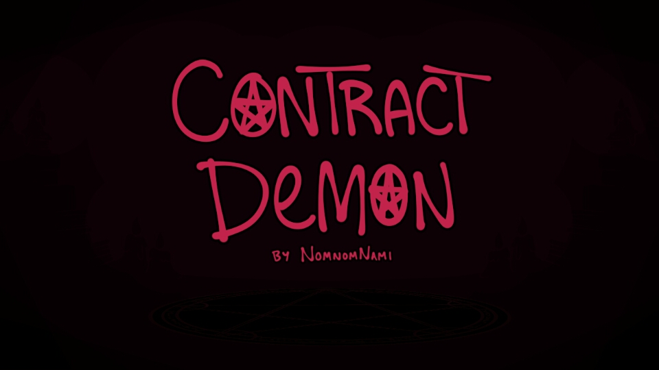Eu não acredito que algo ao surgir em minha vida fique apenas de passagem, como uma data comemorativa, que ocorrendo uma vez ao ano, curti-la é algo necessário para mim, pois ela é única. Eu falo sobre que é especial, pois envolve uma coisa a qual se agrega valor, não é sobre fazer algo que se faz todos os dias, porque é uma obrigação, mas sim sobre ir a um show do seu artista favorito. A visual novel Contract Demon é uma pura obra de arte e também a razão do que pode haver entre um anjo e um demônio.
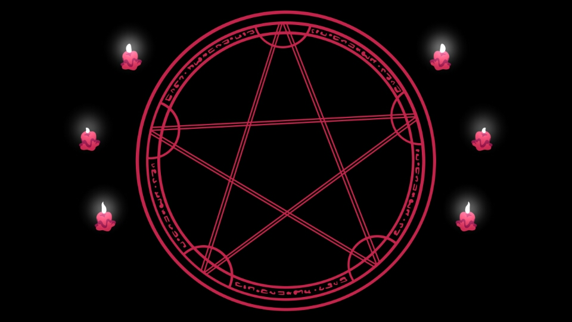Diretamente do lugar onde os mortos os quais más pessoas quando vivas, onde as criaturas de nossos pesadelos surgem, uma demônio é invocada para atender uma cliente que não demostra um único pedaço de maldade em seu coração, um anjo chamado Eleni que recebe em seu círculo de evocação a demônio Kamilla..
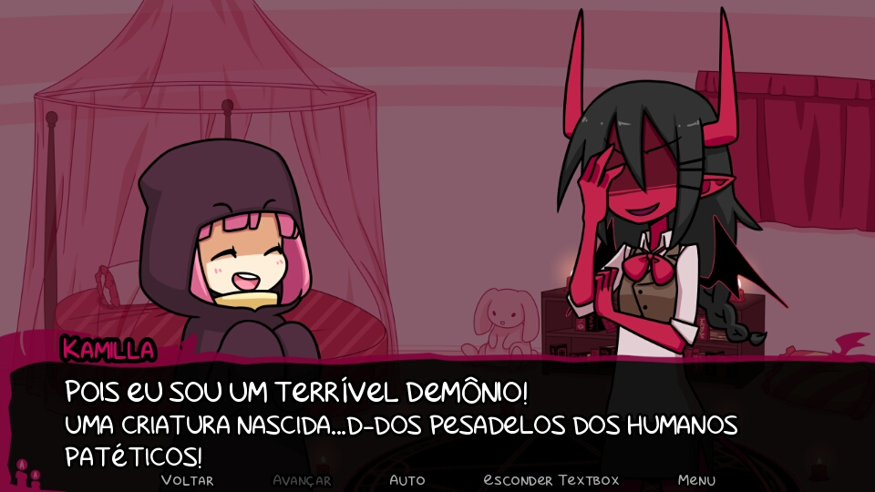Há um trato entre as duas as quais Eleni evoca Kamilla regularmente para se divertirem juntas, mas devido a grande quantidade de tempo que elas passam juntas, a demônio quer que Eleni faça um acordo para que fique sem evoca-la por alguns dias, pois ela precisa de experiência nesse começo de carreira e não quer ser monopolizada. Um novo contrato é selado, o qual Kamilla tem que ficar na casa do anjo por um dia completo e logo após, três dias sem evocação. Elas brincam, comem juntas, assistem um filme, sendo que Eleni dormiu durante quase toda a exibição e por fim, dormem um ao lado da outra
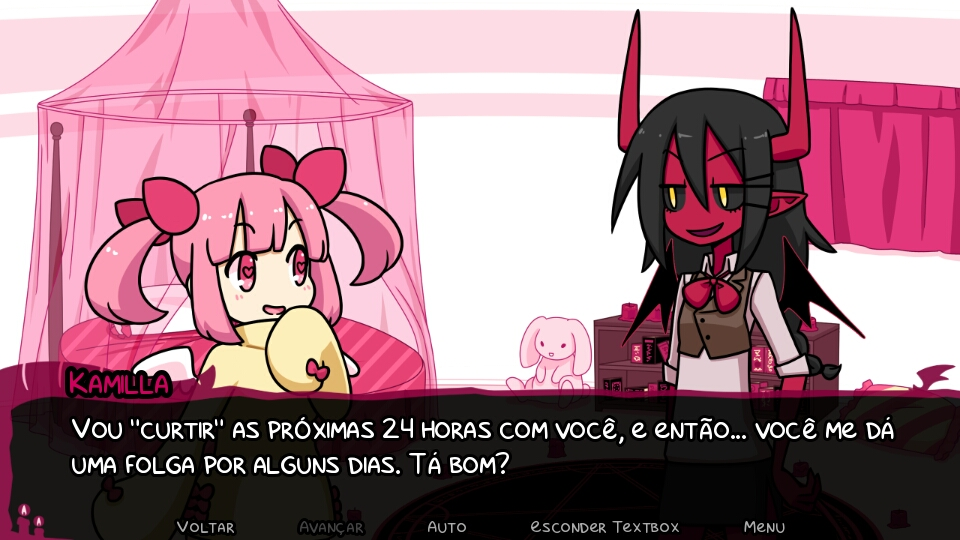O contrato é selado e respeitado, durante os três dias, nenhuma evocação é realizada, dias se passam e mais nenhuma evocação é realizada. Kamilla vinha falando com Mazaal, uma secretária do escritório, sobre a cliente que ela atendia e Mazaal respondeu que provavelmente a bruxa dela estaria ocupada com outra coisa e Kamilla contesta o fato de Eleni ser uma bruxa e Mazaal diz que está registrado como uma bruxa e não um anjo, além disso, chama Kamilla de sentimental, pois se recusava a querer outra cliente.
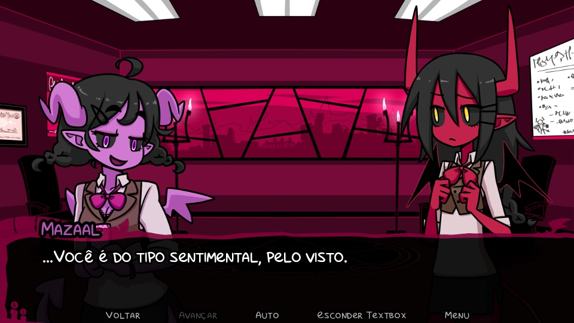O supervisor e irmão de Kamilla estava preocupado com ela, já que ela estava deprimida por não ter sido mais evocada nos últimos dias e disse que ela não poderia namorar as clientes, ainda mais alguém a qual se está se tirando a vida. O real motivo pelo qual não havia mais evocações era porque Eleni havia perdido seu material de evocação, pois ela foi descoberta e expulsa de onde morava e ela havia um plano para conseguir se encontrar com Kamilla
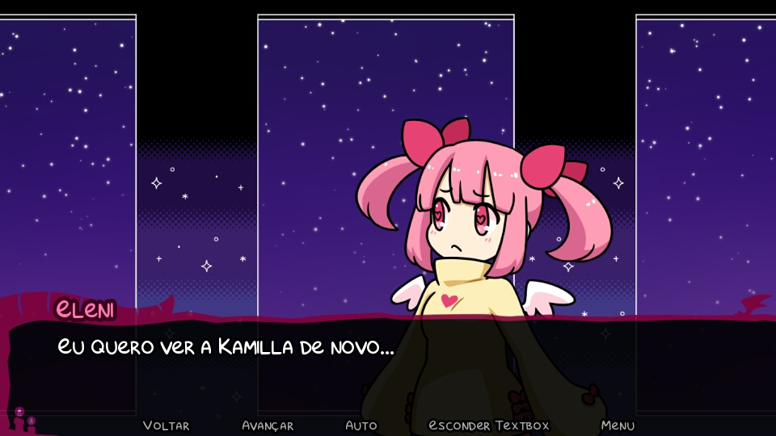Depois de um mês e uma semana, finalmente Eleni surge, ela encontra Kamilla no submundo e Kamilla parece não acreditar, a história de como foi para ali era bem simples, estava sem onde morar e decidiu encontrar Kamilla no submundo e para isso se levou vários dias. Ela precisava de um lugar para morar e teria que ser na casa de Kamilla, os dias que ela passou buscando Kamilla foram longos e difíceis, vrias cidades foram visitadas e sua vida era a de uma sem teto,
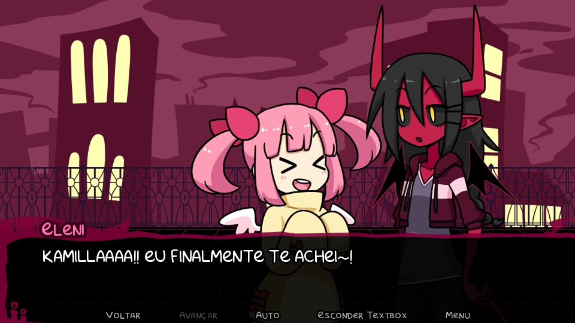e então Kamilla a leva para seu quarto. A felicidade de Eleni era genuína, pois ela segui seu coração e propôs que agora elas poderiam ser amigas ou namoradas…
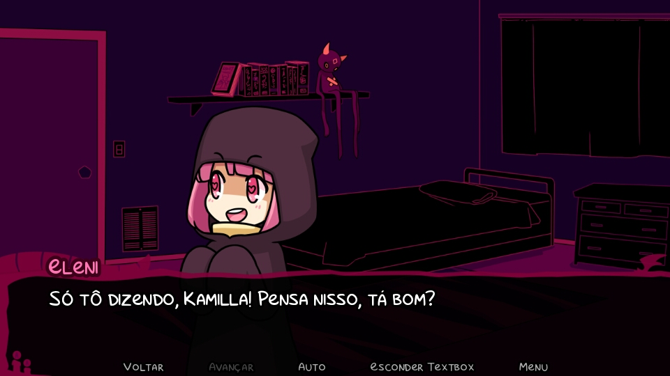Ao escultar está proposta, Kamilla sai rapidamente de seu quarto e vai falar com seu irmão e para ele conta tudo, buscando uma forma de acabar com o contrato, ele diz que sim há uma maneira, encherrando o contrato como “começar uma amizade”, sem causar mais danos a alma de Eleni.
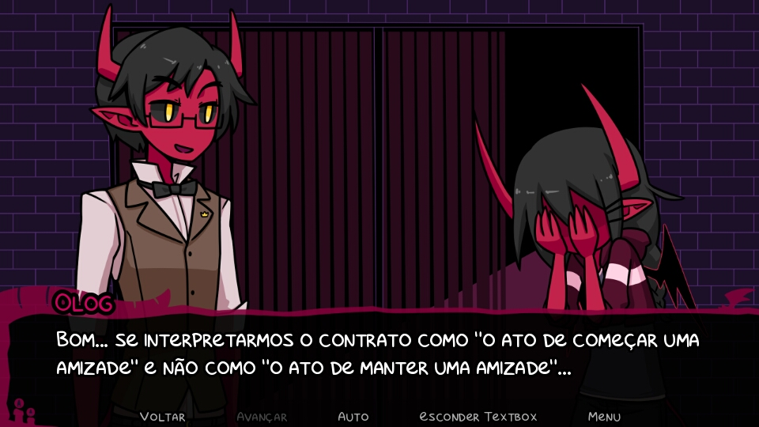Agora as duas podiam ser amigas sem problema algum ou namoradas, Eleni insistia. Naquela mesma noite as duas forma dormir no quarto, mas Kamilla ainda tinha receio de Eleni, já que ela era bem pervertida.
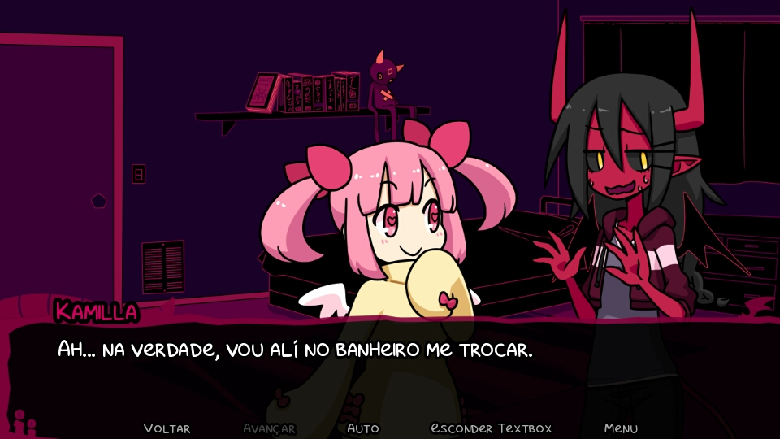No fim, as duas dormiram, Eleni na cama e Kamilla em um saco de dormir próxima a Eleni e elas até deram as mãos.
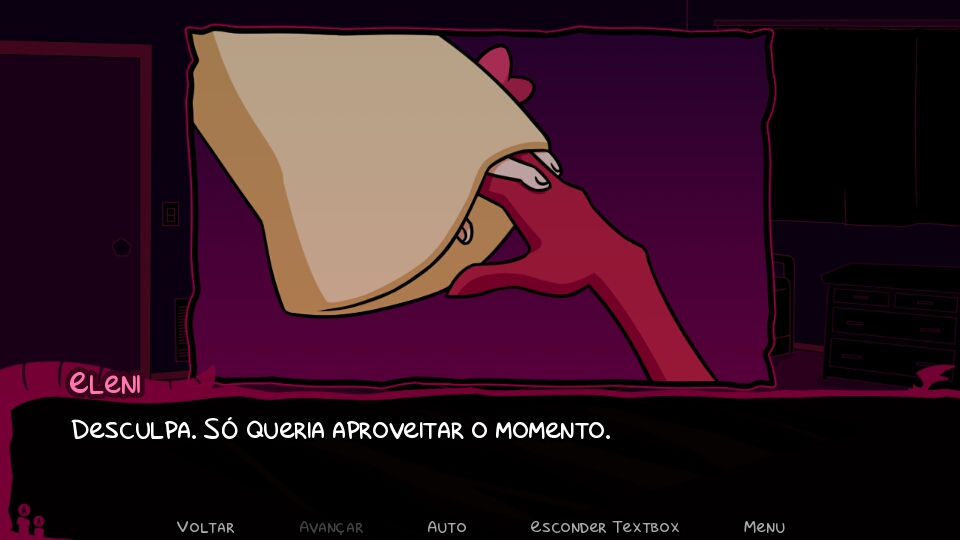De imediato, Kamilla quis ser má com Eleni, pois achava que estava sendo boazinha demais, pois ela achava que demônios não podiam se apaixonar. No dia seguinte, Kamilla estava com Eleni andando pela cidade. Eleni curiosa perguntou para onde estavam indo e Kamilla falou “para a estação, vou te levar de volta”, ao ouvir isso, ela não gostou nenhum pouco ainda mais pelo fato que havia corrido na noite anterior e ela não poderia ser dispensada assim, ela estava triste por saber que aquilo que sentia não era reciproco e disse que falaria com o dono do prédio para conseguir um apartamento para poder morar.
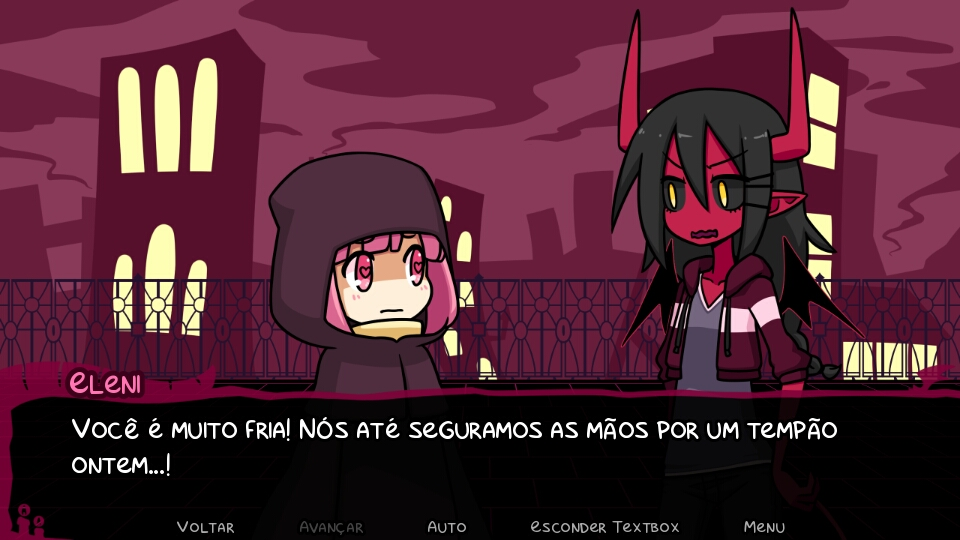Kamilla estava estava sozinha na rua, pensativa sobre o que tinha acabado de fazer, ela pensava que demônios não podiam mesmo se apaixonar quando ela mesma estava apaixonada. Pensou sobre suas escolhas e viu que as sua escolha de trabalhar como demônio contratada por seguir o pensamento de que um demônio devia trabalhar assim a fez tomar a escolha que a fez se arrepender, o mesmo era negar o amor que sentia. Kamilla se encontrou novamente com Eleni, que já havia conseguido um quarto e o fez ficar idêntico ao antigo. Eleni confessou que não era de fato um anjo e Kamilla já sabia, ela também era relativamente uma falsa demônio. Kamilla confessou seu amor e elas poderão finalmente dormir juntas e assumir esse sentimento.
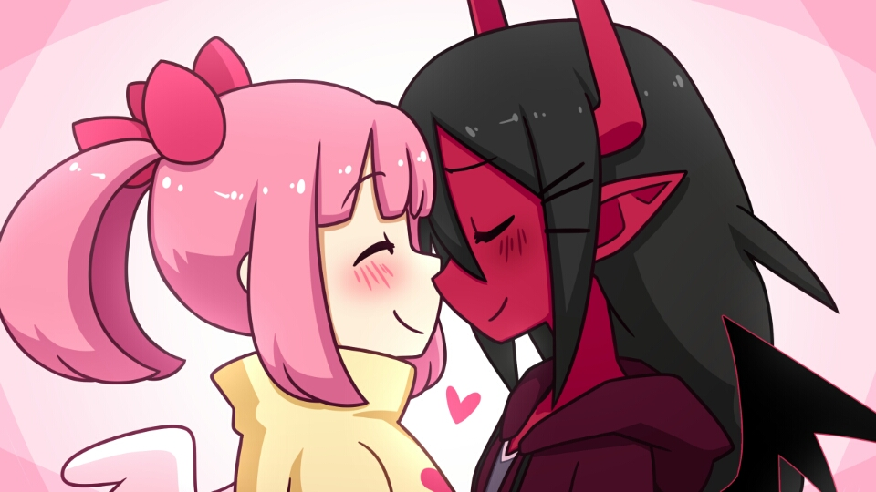